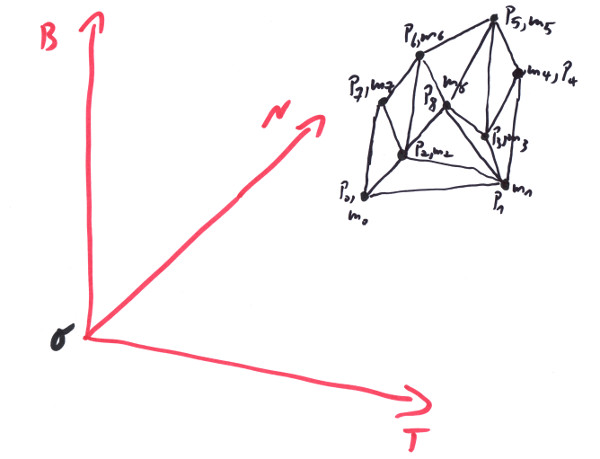

"A method is more important than a discovery,
since the right method will lead to new
and even more important discoveries."
- Lev Landau
A body is some thing that has a position and a mass - or a body is a rigid composition of other bodies. By rigid composition we mean that several bodies of a simpler type might stick together really tight and form a more complex body. Some english kniggit - let's call him Sir Newton - had figured out, that a force is actually not causing a velocity of a simple body directly, but just an acceleration of it:
Mass m = mass of the body;
Vector<Force> f = force applied to the body for whatever reason;
Vector<Acceleration> a = f / m;
in fact, the force will cause an acceleration with respect of the mass of the body. This acceleration by definition ( the acceleration is a change in velocity per time - never mind about squared seconds, it is ((length per time) per time) - will in turn cause a change in velocity:
Vector<Velocity> dv = a * dt
Vector<Velocity> v = v + dv;
while a certain time span dt is passing. This gives a v(t+dt) for a v(t), and only that in turn will by definition cause a displacement of our body:
Position<Length> P += v * dt;
That's quite some result, we call it 'Sir Newton's Algorithm', and it comes in handy, since we want to simulate bodies on their curves in space. Basically all we have to do is to figure out what forces we need, to keep our trains in track. Great! - And exactly that is the tautology in here: if we see a body moving in the Universe, we are able to determine the forces applied to it by the formula and whoops, we know what f is and all of a sudden from a = f/m again we determine that it moves correctly, according to the 'theory'. That is because f can not be determined any other way as by watching bodies moving. Since f might depend on time, it gets pretty crowdy for different bodies to move at the same place at the same time. Even if Galilei would have found out that level rolling balls would stop after 10_m, this 'theory' would make a 'force' accountable for it. A body can do only a single thing to refute this theory: it would have to relocate instantaniously, and that could not be measured - and by the way this was not solved by Einstein; Einstein got it even worse. As a scientist this really would bother me; as a programmer, I'm completely happy with it. I regard it as a method, not as a discovery. I don't know, wether Landau is right, but it is with the whole book of this: there is not one single physical discovery in it, I promise: it is all method! So never mistake this for reality: "The Truth Is Out There".
After this rant about Newton's dynamics you might take it more easy that there is one other catch: and that's the thing with the composition:
In the image we see a rigid composition of masses concentrated in single points, their positions. For whatever reason, the relative distances of these masses are unchangable, but the whole body can move and rotate in space. If by any chance we remember Archimedes' principle of the lever it says that if you have two masses you can bring them into equilibrum around a fixed point if you place them at the following distances:
Mass m0,m1;
Length d0,d1;
m0 * d0 == m1 * d1;
Meaning as lighter a mass is, as farther out you have to put it (that's how many scales are build). We can define a 'torque' T being a force f applied over a lever of length d. So with g being the acceleration of earth's gravity, the above equation would become:
g * m0 * d0 == g * m1 * d1;
f0 * d0 == f1 * d1;
T0 == T1;
So if the torques are equal, the lever would be in equilibrum and won't start to move. In the example we have forces that are both directed down, since they are gravitational. But any force would have a component that runs through the lever into the fixed point and will be therefore doing nothing and the rest being a component perpendicular to the lever. So with |T| = |f| * |d| = |f| * |r| * sin(a) with r being the distance vector from the fixed point to the mass m and a being the angle between the force vector f and the distance vector r, we see (take a look at Chapter2) that:
Vector<Length> r = ...;
Vector<Force> f = ...;
Vector<Torque> T = r % f;
Let us generalize this a little bit for our body: there will be a point, the 'center of mass' C, for which all the terms mi * ri added up will result in 0, with ri now being the vector distances from that point to the positions of the masses:
Mass m0, m1, m2, ...; // Masses i.
Vector<Length> r0, r1, r2, ...; // Distances from the 'center of mass' C to the mass i.
∑(mi * ri) = m0 * r0 + m1 * r1, + m2 * r2 + ...; // We use the ∑ symbol to make clear that the term is the
// addition over all occuring indices like i,j,k,l
∑(mi * ri) == Null<decltype(Mass{}*Length{})>;

In this case also the torques due to gravity, T = ∑Ti = ∑(ri%fi) = ∑(ri%mi*g) = ∑(mi * ri) % g, would be zero; hence the body would not move if we support it under C. But what would happen if we rotate the body? Would it be the rotated ri and therefore the same C, that would make up our center of mass? Or will the body start to turn and maybe even fall down? Let's suppose we have a rotation around some line that runs through our old C and we rotate the body some angle a. The masses will stay the same, but the ri and therefore their components, the ri.dx, ri.dy, ri.dz would change. Will ∑(mi * ri) still sum up to Null? Well, instead of rotating the body, we might go to a Frame that sits in the center C and then rotate it in the opposite direction. That would yield the same components. Now we know from Chapter2 that we can evaluate a vector equation in any Frame we like, and it will still be valid. So still the sum will add up to the Null vector, the only vector whiches components will never change on Frame transformation.
To calculate the center of mass:
Position<Length> C; // Center of mass.
Mass mi; // Masses i.
Position<Length> Pi = C + ri; // Positions of masses i.
using O = Origin3D<Length>; // Origin of our Frame
∑(mi * (Pi - O)) == ∑mi * (C - O) + ∑(mi * ri);
∑(mi * (Pi - O)) == m * (C - O); // m is the total mass of the body, the sum of all mi.
--> C = O + ∑(mi * (Pi - O)) / m;
From the position of a single mass i, Pi, we can calculate the vi and the ai of its position by derivations:
Position<Length> Pi(t) = C(t) + ri(t);
Vector<Velocity> vi = dPi/dt = vC + dri/dt;
Vector<AnglePerTime> w; // With a rotational velocity w we can write:
dri/dt = w % ri; // This is, because ri is fixed in length, it only rotates (see Chapter2)
--> vi = vC + w % ri;
w is a vector, describing a rotational velocity around the line defined by it and C; its length is the angle of rotation per time. So, the velocity of the mass is the sum of the velocity of the center point and the effect of the rotation of the total body. Since we are talking about a rigid body, we always assume that |ri| is constant. The second derivative gives:
Vector<Acceleration> ai = dvi/dt = aC + dw/dt % ri + w % dri/dt;
--> ai = aC + dw/dt % ri + w % (w % ri);
So if we would knew, how the center of mass C(t) is moving and how the body rotates around it with w(t), then we comparably easy could calculate the positions, velocities and accelerations of all the masses that make up our body. The question is, how do we calculate C(t) and w(t)? We would like to have a nice straightforward and easy approach like the one for a single mass point at the beginning of this chapter, that we called 'Sir Newton's Algorithm'. Each mass mi can be subject to a force fi, what happens then? Technically each mass point would start to move according to the above algorithm, but our condition is, that the body be rigid and the |ri| do not change. To guarantee that, we have no other means as to apply additional forces to make the condition hold. But we include these in fi, so still ai = fi / mi must hold, after all it's a law of physics! So, how does C move?
Vector<Velocity> vC = dC/dt = d/dt(O + ∑(mi * (Pi - O)) / ∑mi);
= ∑(mi * dPi/dt) / ∑mi;
= ∑(mi * vi) / ∑mi;
Vector<Acceleration> aC = dvC/dt = ∑(mi * ai) / ∑mi;
= ∑(mi * fi/mi) / ∑mi; // ai = fi/mi must hold: to keep our body rigid we have to use forces and that are included in fi.
= ∑fi / ∑mi;
= f / m
Looks familiar? The center of mass is just moving in a way governed by the same laws as are valid for the single mass, if you take f = ∑fi for the force and m = ∑mi for the mass! So we can use 'Sir Newton's Algorithm' to figure out C(t). That was easy! Let's try the rotation: We want something like: dw/dt = ∑(ri % fi) / inertia with the torque, we defined earlier, but that would be a guess. Let us define the angular momentum L in a way so that dL/dt == T:
Vector<AngularMomentum> L = ∑(ri % mi*vi);
dL/dt == ∑(dri/dt % mi*vi + ri % mi*dvi/dt);
== ∑((vi-vC) % mi*vi + ri % mi*ai);
== ∑(-vC % mi*vi + ri % fi);
== -vC % ∑(mi*vi) + ∑(ri % fi); // since ∑(mi*ri) is 0 and stays so, its derivative ∑(mi*vi) also is null
== T;
This is a definition and we define it that way, because we want it to mimic the f = m * a = m * dv/dt = d(m*v)/dt = dp/dt relationship, where p == m*v is the linear momentum of an object. Let's try to formulate L in terms of w:
L = ∑(ri % mi*vi);
= ∑(mi*(ri % vi));
= ∑(mi*(ri % (vC + w % ri)));
= ∑(mi*(ri % (w % ri)));
= ∑(mi*((ri*ri)*w - (ri*w)*ri))); // vector triple product, see Chapter2
let us calculate this by the components, ri = { xi, yi, zi }, w = { wx, wy, wz }:
L = ∑(mi*((xi²+yi²+zi²)*{ wx, wy, wz } - (xi*wx+yi*wy+zi*wz)*{ xi, yi, zi })));
{ (xi²+yi²+zi²) * wx - (xi*wx+yi*wy+zi*wz) * xi }
= ∑(mi * { (xi²+yi²+zi²) * wy - (xi*wx+yi*wy+zi*wz) * yi } )
{ (xi²+yi²+zi²) * wz - (xi*wx+yi*wy+zi*wz) * zi }
{ (yi²+zi²) * wx - (yi*wy+zi*wz)*xi }
= ∑(mi * { (xi²+zi²) * wy - (xi*wx+zi*wz)*yi } )
{ (xi²+yi²) * wz - (xi*wx+yi*wy)*zi }
{ (yi²+zi²), -yi*xi, -zi*xi } { wx }
= ∑( mi * { -xi*yi, (xi²+zi²), -zi*yi } * { wy } )
{ -xi*zi, -yi*zi , (xi²+yi²)} { wz }
{ ∑(mi*(yi²+zi²)), -∑(mi*yi*xi), -∑(mi*zi*xi) } { wx }
= { -∑(mi*xi*yi), ∑(mi*(xi²+zi²)), -∑(mi*zi*yi) } * { wy }
{ -∑(mi*xi*zi), -∑(mi*yi*zi), ∑(mi*(xi²+yi²))} { wz }
= I * w;
I is called the inertia tensor[1] and it makes our formula for the relation between (angular) velocity and (angular) momentum quite simple and similar to the linear case. But note that in general the angular velocity will not have the same direction as the angular momentum. Formally I is a 3x3 matrix, but we call it 'tensor' since L = I * w actually is a vector equation, that can be evaluated with the above formular in any Frame. Only if you consider Frames that move with respect to each other, you will have to be carefull, since angular velocities like linear ones get not preserved when changing inertia systems.
Great. So with our linear momentum p = m*v we can do the following:
Vector<Momentum> p = m * v
Vector<Force> f = m * a = m * dv/dt = d/dt(m*v) = dp/dt;
That rises the curiosity about what dL/dt in terms of dw/dt might be:
dL/dt = d/dt∑(mi*((ri*ri)*w - (ri*w)*ri)));
= ∑(mi*(d/dt(ri*ri)*w + mi*((ri*ri)*dw/dt - (dri/dt*w)*ri - (ri*dw/dt)*ri - (ri*w)*dri/dt)));
= ∑(mi*( 0 + mi*((ri*ri)*dw/dt - 0 - (ri*dw/dt)*ri - (ri*w)*(w % ri)))); // ri² does not change with time, dri/dt and w are orthogonal
= ∑(mi*( mi*((ri*ri)*dw/dt - (ri*dw/dt)*ri - (ri*w)*(w % ri)));
= ∑(mi*( mi*((ri*ri)*dw/dt - (ri*dw/dt)*ri) - w % ∑(mi*(ri*w)*ri);
= I * dw/dt + w % ∑(mi*((ri*ri)*w - (ri*w)*ri)); // w % w == Null
= I * dw/dt + w % L;
Well, since dL/dt is the change of angular momentum with time, it is by definition our torque T. So we get:
Vector<Torque> T = I * dw/dt + w % L;
and the good news is, that for w == 0 it quite mimics f = m * a, if we ignore the fact that the acceleration of the rotation and the torque do not necessarilly have the same direction (known as the tennis racket phenomenon). If the body happens to already have a rotation, then all moose are loose, as can be seen with several kinds of spinning tops. Even if T == 0 - so there is no torque and we have a free spinning body - that does not necessarily mean that w will be constant! As dw/dt == Inverse(I) * (L % w) is not necessarily zero, nor is it guaranteed that it keeps direction[2]. Should you english kniggits dare[3] to apply a serious torque to an already spinning body to impose your will on it, it might react in funny ways with changes of its rotational axis, which you probably will not survive unhurt as can be seen from the formular.
But anyway, we did this for a reason: we want to have our algorithm be workable. And indeed, if we have a body and it has an initial C and vC of the center of mass as well as angle a and w, and we have a force f for the center of mass and a torque T - or calculate f, T from some fi that react on the body at distances ri from the center, we can calculate:
Vector<Velocity> dvC = aC * dt = f/m * dt;
Vector<Velocity> vC += dvC
Vector<AngularVelocity> dw = Inv(I)(T + L % w) * dt;
Vector<AngularVelocity> w += dw;
Finally we update the positions and angles by:
Position<Length> C += vC * dt;
Vector<Length> a += w * dt;
Finished! Lastly let us discuss the practicall calculation of I a little:
The formula for I gives a clear answere, about how to calculate I if you have a set of discrete masses and their locations in a body. But what would be the I of - say - a sphere with a uniform mass distribution? Or a cube or a cylinder? That's right! We have to transition to the infinitesimal case of really tiny mass elements dm in really tiny volumes dV that are part of our object and integrate over them:
{ ∫(y²+z²)*dm, -∫y*x*dm, -∫z*x*dm }
I = { -∫x*y*dm, ∫(x²+z²)*dm, -∫z*y*dm }
{ -∫x*z*dm, -∫y*z*dm, ∫(x²+y²)*dm }
The integrals go over the mass, x, y, z are function of the masses positions. With the introduction of the uniform mass density ρ, we can make a relationship to dV:
dm = ρ * dV;
{ y²+z², -y*x, -z*x }
I = ρ * ∫ { -x*y, x²+z², -z*y } * dV
{ -x*z, -y*z, x²+y²}
These are basically three integrals over the three dimensions of space. Since the ρ is constant it can go in front of the integral. So for a cube lets say, this would compute as:
{ y²+z², -y*x, -z*x }
I = ρ*∫*∫*∫{ -x*y, x²+z², -z*y } * dx*dy*dz
{ -x*z, -y*z, x²+y²}
where every single integral goes over the cube's extents Dx, Dy, Dz:
{ (y²+z²)*x, -y*x²/2, -z*x²/2 }
I = ρ*∫*∫{ -x²/2*y, x³/3+z²*x, -z*y*x } *dy*dz |Dx
{ -x²/2*z, -y*z*x, x³/3+y²}
{ (y²+z²)/3, -y*x*/4, -z*x/4 }
= ρ * { -x*y/4, (x²+z²)/3, -z*y/4 } *x*y*z |Dx|Dy|Dz
{ -x*z/4, -y*z/4, (x²+y²)/3 }
Let's assume, the axis aligned cube is placed in the center, so e.g. x runs from -Dx/2 to +Dx/2. We see that every term square in one coordinate would be multiplied by 0, so all of them vanish:
{ (y²+z²)/3, 0, 0 }
I = ρ * { 0, (x²+z²)/3, 0 } *x*y*z |Dx|Dy|Dz
{ 0, 0, (x²+y²)/3 }
{ (y²+z²)*Dx/3, 0, 0 }
= ρ * { 0, (Dx²/4+z²)*Dx/3, 0 } *y*z |Dy|Dz
{ 0, 0, (Dx²/4+y²)*Dx/3 }
{ (y²+z²), 0, 0 }
= ρ/3 * { 0, (Dx²/4+z²), 0 } *Dx*y*z |Dy|Dz
{ 0, 0, (Dx²/4+y²) }
{ Dy²+Dz², 0, 0 }
= ρ/12 * { 0, Dx²+Dz², 0 }*Dx*Dy*Dz
{ 0, 0, Dx²+Dy² }
{ Dy²+Dz², 0, 0 }
= m/12 * { 0, Dx²+Dz², 0 }
{ 0, 0, Dx²+Dy² }
To do this calculation for different shapes it is advisable to choose matching coordinate systems. E.g, calculate the I of a sphere in spherical or the I of a cylinder in polar coordinates. Trax also supplies functions that calculate I for certain shapes, or just look the results up here: [4].
Please note that we calculated the boxes inertial tensor I in a specific frame, to make calculations simpler. If I is part of a vector equation, you might need it in a different - typically rotated - frame. If you have a rotation matrix R, to describe the rotation of the target frame from our axis aligned frame, then the inertia tensor would transform like this:
I' = Transposed(R) * I * R;
Generally, if you have an axis Vector
ia = I * A * A;
On combining a physics simulation with bodies that are not ruled by it, like static or somehow otherwise moving objects - often attributed as 'kinematic' - that nevertheless can collide with the dynamic bodies, special problems arise on the dynamic side. The reason for those is Sir Newton's Third law of motion: on any force excerted by a body, it encounters an equal force, but of opposite direction. Now this law is broken and the kinematic body does not encounter any force. So it does not give way. Due to a = f / m it behaves like a body with infinite mass, or a wall - a non movable but moving wall, to be precise. There are different possibilities to solve this problem, but our solution here is, to calculate everything, including the train movement, inside the physics engine; so the problem does not show up in the first place.